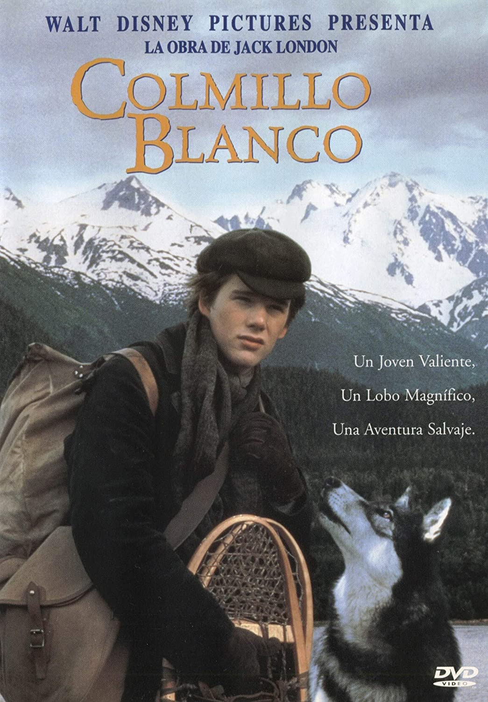
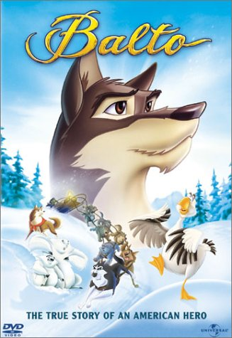

2. Entonces, ¿Porqué diablos amo tanto a los Huskies?
Esta historia comienza alrededor de los años 2005/2006, cuando mi pequeño ser de tan solo 6/7 añitos vió por
primera vez dos películas que cambiaron mi vida.
Primero vi una vieja película llamada Colmillo Blanco:
 La cual trata de un perro lobo que es domesticado por un minero de oro y forman un vínculo
especial a lo
largo de la película.
La segunda película que vi y terminó de enamorarme de los Huskies y lobos, fue Balto:
 Esta es más dirigida a niños, pero no tuvo un menor efecto que la anterior, ya que sigue la
historia real de
Balto, un Husky Siberiano que salvó las vidas de niños infectados con disentería en el año 1925 en
Alaska.